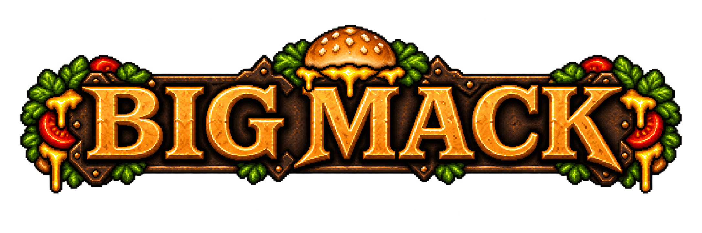

Big Mack · burger debris cinematic

Lettuce + cheese + burger crumbs + landing bursts · 6-second concept · placeholder dungeon floor · synthesized cinematic music sketch

Lettuce + cheese + burger crumbs + landing bursts · 6-second concept · placeholder dungeon floor · synthesized cinematic music sketch